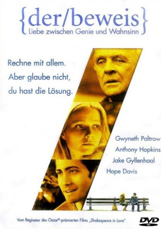

#2410 Der Beweis
Alternativ: Proof
 
 IMDB-Wertung: 6.8 / 10
IMDB-Wertung: 6.8 / 10  Metascore: 64
Metascore: 64 
Die junge und hochbegabte Catherine (Gwyneth Paltrow) durchforscht nach dem Tod ihres Vaters (Anthony Hopkins), eines brillanten Mathematikprofessors, dessen Aufzeichnungen, um auf Spuren seiner früheren Genialität zu stoßen. Denn mit zunehmendem Alter ihres Vaters wurde sein Genie immer mehr von geistiger Umnachtung beeinträchtigt. Ein ehemaliger Student ihres Vaters (Jake Gyllenhaal) verliebt sich in sie und unterstützt sie bei der Reise in ihre Vergangenheit. Im Verlauf der Suche muss sich die junge Frau mehr und mehr ihren eigenen Ängsten stellen: Hat sie womöglich nicht nur die Genialität ihres Vaters geerbt, sondern auch seine Krankheit?
Jahr: 2005
Dauer: 100 Minuten
FSK: 6
Land: USA Studio: MiramaxTonspuren: DD5.1 - ,
Untertitel: Englisch,
Auflösung: 720p (1280x544) Größe: 4741 MB
Genre: Drama, Mystery
Regisseur: John Madden
Drehbuch: David Auburn, David Auburn, Rebecca Miller
Soundtrack: Stephen Warbeck
Darsteller:
 Gwyneth Paltrow als Catherine
Gwyneth Paltrow als Catherine Anthony Hopkins als Robert
Anthony Hopkins als Robert Jake Gyllenhaal als Harold Dobbs - Hal
Jake Gyllenhaal als Harold Dobbs - Hal Hope Davis als Claire
Hope Davis als Claire- Tobiasz Daszkiewicz als Limo Driver
 Gary Houston als Professor Barrow
Gary Houston als Professor Barrow Anne Wittman als Friend at Party
Anne Wittman als Friend at Party- Leigh Zimmerman als Friend at Party
 Colin Stinton als Theoretical Physicist
Colin Stinton als Theoretical Physicist- John Keefe als University Friend
- Chipo Chung als University Friend
- C. Gerod Harris als University Friend
 Roshan Seth als Professor Bhandari
Roshan Seth als Professor Bhandari- Selena Mars als Student , uncredited
- Haroula Rose als Student , uncredited
 Danny McCarthy als Cop
Danny McCarthy als Cop- Leland Burnett als Band Vocalist
- Lolly Susi als Airport Check-In Lady
- Benjamin S. Carroll als Memorial Attendee , uncredited
- Daniel Hatkoff als Student , uncredited
- Christian Rose als Airport Patron , uncredited
- John Thurner als Church Memorial Attendee , uncredited
Datei: X:\2005(A-F)\Beweis, Der (2005, FSK6, 1280x544).mkv seit 05.11.2015
Festplatte: HD 2003-2004-2005(A-F)
 Es gibt insgesamt 49 Filme in der Gruppe '2005(A-F)'
Es gibt insgesamt 49 Filme in der Gruppe '2005(A-F)'